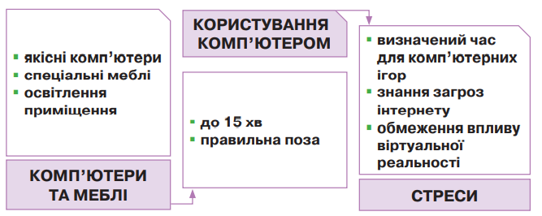
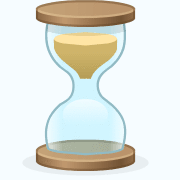
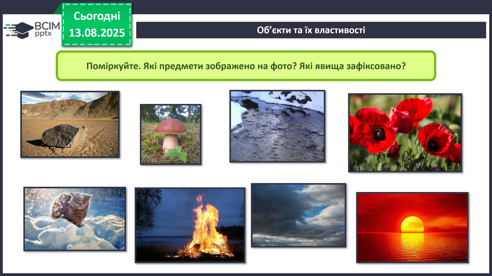
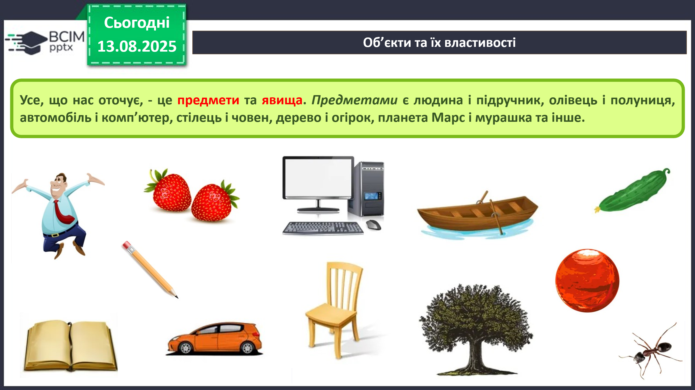
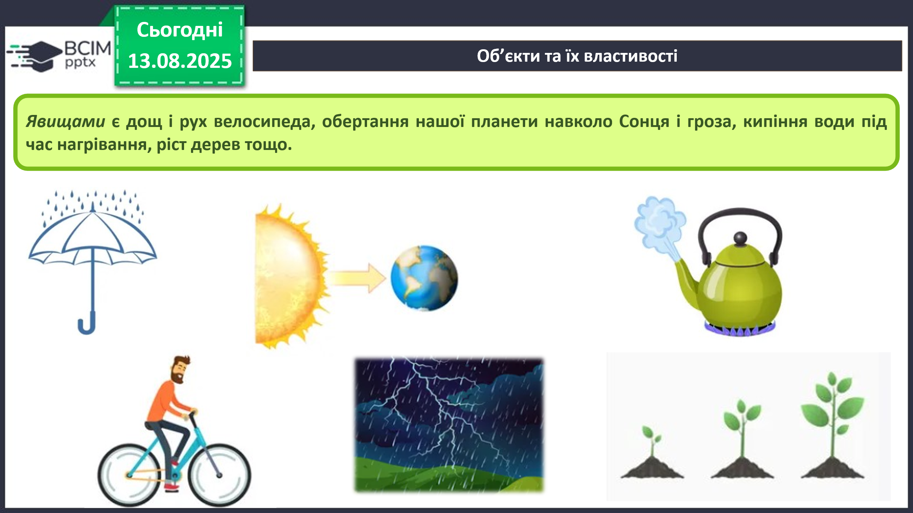
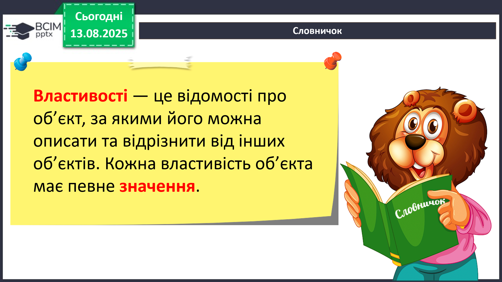
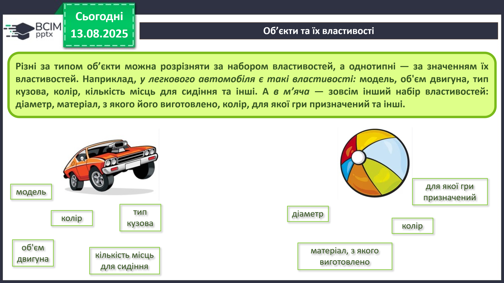
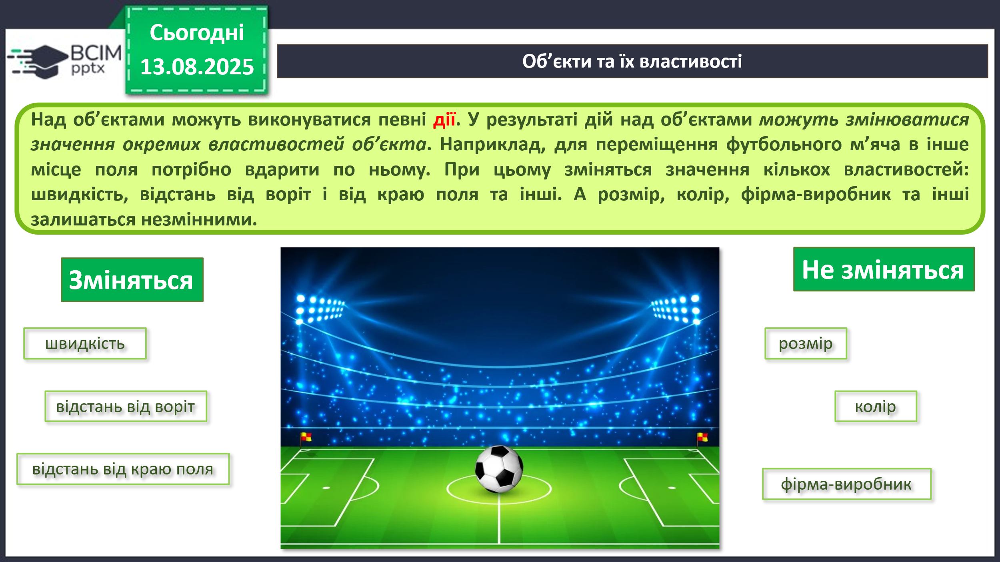

HUB 56 · 5 клас · Урок №1
Теорія
Правила безпечної поведінки у кабінеті інформатики. Повторення основних прийомів роботи із комп’ютером. Об’єкти, їх властивості, значення властивостей об’єкта.
Теми, які вивчатимемо в 5 класі
У 5 класі ми з вами вивчатимемо такі теми:
- Інформаційні процеси та системи
- Комп’ютерні мережі. Інтернет
- Комп’ютерні презентації
- Текстові документи
- Алгоритми та програми
- Практикум з використання інформаційних технологій
Правила безпечної роботи за комп’ютером
Перш ніж розпочати вивчення інформатики, маємо пригадати основні правила поведінки в комп’ютерному класі та під час роботи за комп’ютером.
XXI століття — час інформаційних технологій. Усе більше людей на планеті використовують комп’ютери. Усім їм потрібно знати відповідні правила безпеки.

- Тримай безпечну відстань від очей до екрана монітора — 50 см
- Не торкайся проводів живлення, розеток, задньої панелі системного блока та монітора.
- Не використовуй сторонніх предметів.
- Не принось на робоче місце поруч із комп’ютером їжу та напої.
- Тримай руки чистими й сухими.
- Не перевищуй час безперервної роботи за комп’ютером понад 15 хв.
- Негайно повідом учителя (в школі) або дорослих (вдома) в разі виникнення незвичайної ситуації з комп’ютером: дивні сигнали, блимання, запах та інші несправності в роботі.
Вправа «Володарі часу»

Завдання. Досліди, скільки часу протягом двох днів ти витрачаєш на сон, навчання, заняття спортом чи інший активний відпочинок, роботу за комп’ютером, власну гігієну чи прийом їжі, інші заняття.
Прийми рішення щодо того, як подати результати твого дослідження.
Виділи трьох найбільших «володарів» твого часу. Зроби висновок, що потрібно змінити у твоєму розпорядку дня.
ПРИКЛАД!
| Заняття | День 1 (години) | День 2 (години) | Всього за 2 дні (години) |
|---|---|---|---|
| Сон | 9 | 10 | 19 |
| Навчання (школа та домашнє завдання) | 7 | 6 | 13 |
| Робота за комп'ютером | 2 | 2 | 4 |
| Спорт/Активний відпочинок | 1 | 2 | 3 |
| Їжа та гігієна | 2 | 2 | 4 |
| Інші заняття (допомога батькам, читання) | 3 | 2 | 5 |
Троє найбільших «володарів» мого часу:
- Сон (19 годин за два дні)
- Навчання (13 годин за два дні)
- Робота за комп'ютером та Їжа/гігієна (по 4 години за два дні)
Висновок:
Я помітив, що багато часу проводжу за комп'ютером, хоча, згідно з правилами, не можна сидіти більше 15 хвилин безперервно. Також у мене не дуже багато часу залишається на спорт. Тому я вирішив, що мені потрібно зменшити час за комп'ютером і замість цього більше гуляти на свіжому повітрі та грати у футбол з друзями.
Об’єкти та їх властивості
Поміркуйте. Які предмети зображено на фото? Які явища зафіксовано?

Усе, що нас оточує, - це предмети та явища. Предметами є людина і підручник, олівець і полуниця, автомобіль і комп’ютер, стілець і човен, дерево і огірок, планета Марс і мурашка та інше.

Явищами є дощ і рух велосипеда, обертання нашої планети навколо Сонця і гроза, кипіння води під час нагрівання, ріст дерев тощо.

Предмети та явища – це об’єкти. Кожний предмет має властивості. Інколи властивості об’єкта називають його параметрами, атрибутами або характеристиками.
Властивості — це відомості про об’єкт, за якими його можна описати та відрізнити від інших об’єктів. Кожна властивість об’єкта має певне значення.

Різні за типом об’єкти можна розрізняти за набором властивостей, а однотипні — за значенням їх властивостей.
Наприклад, у легкового автомобіля є такі властивості: модель, об'єм двигуна, тип кузова, колір, кількість місць для сидіння та інші.
А в м’яча — зовсім інший набір властивостей: діаметр, матеріал, з якого його виготовлено, колір, для якої гри призначений та інші.

Над об’єктами можуть виконуватися певні дії.
У результаті дій над об’єктами можуть змінюватися значення окремих властивостей об’єкта. Наприклад, для переміщення футбольного м’яча в інше місце поля потрібно вдарити по ньому. При цьому зміняться значення кількох властивостей: швидкість, відстань від воріт і від краю поля та інші. А розмір, колір, фірма-виробник та інші залишаться незмінними.
